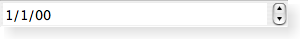

| Home · All Classes · Modules · QSS HELP · QSS 案例 · VER007 HOME |
The QDateEdit class provides a widget for editing dates based on the QDateTimeEdit widget. More...
该QDateEdit类提供的基础上，进行编辑日期的小部件QDateTimeEdit小工具。
许多由QDateEdit提供的性能和功能都在实施QDateTimeEdit。下列属性是最相关与这个类的用户：
 |
A date editing widget shown in the Windows XP widget style. |
|  | A date editing widget shown in the Macintosh widget style. |
| A date editing widget shown in the Plastique widget style. |
该parent的说法，如果不是没有，原因self通过Qt的，而不是PyQt的拥有。
构造一个空的日期编辑器与parent。
该parent的说法，如果不是没有，原因self通过Qt的，而不是PyQt的拥有。
构造一个空的日期编辑器与parent。日期设置为date。
| PyQt 4.10.3 for X11 | Copyright © Riverbank Computing Ltd and Nokia 2012 | Qt 4.8.5 |